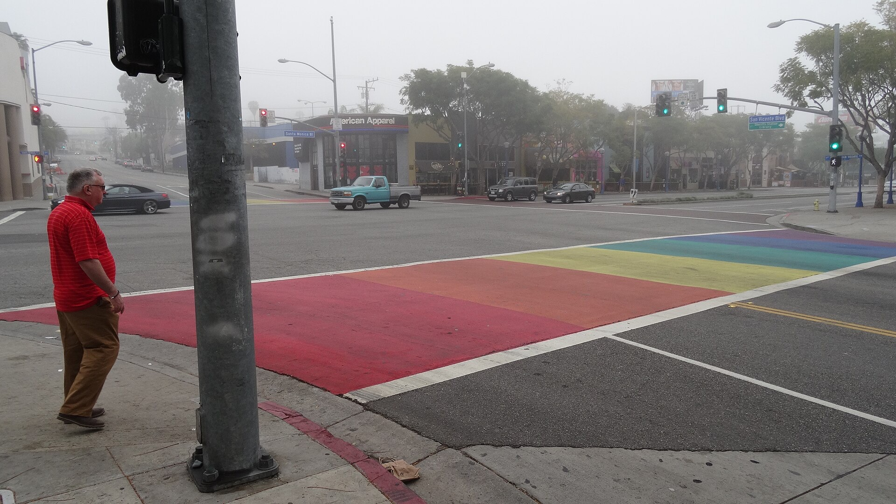
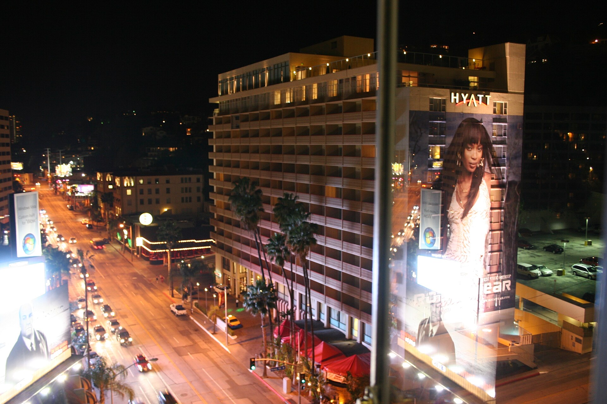
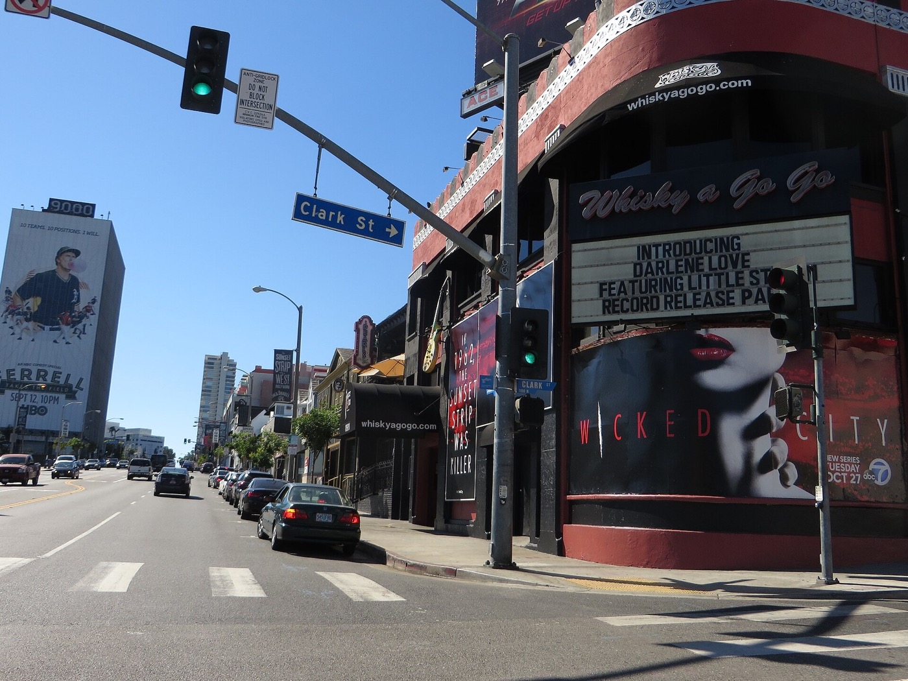
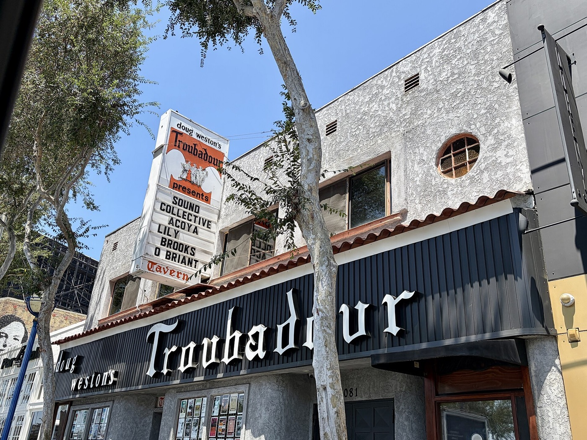
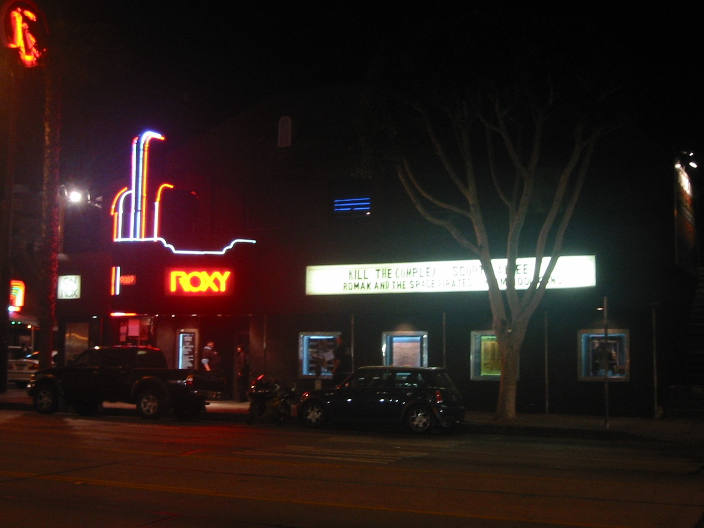
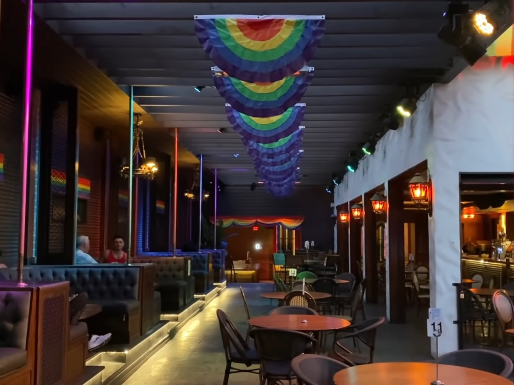
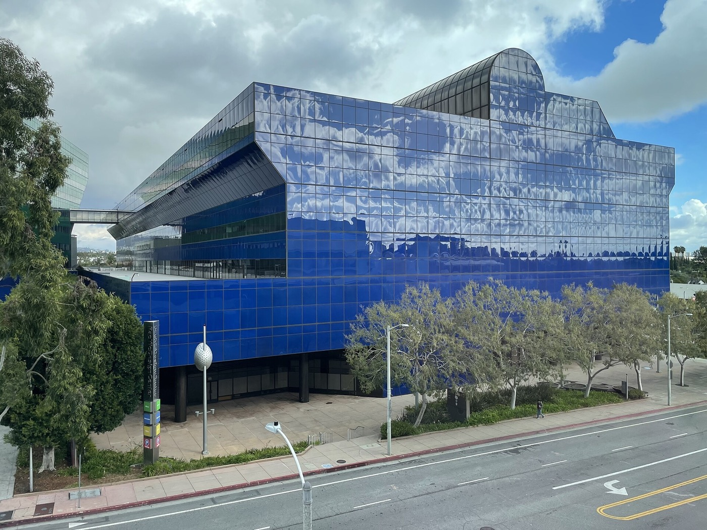
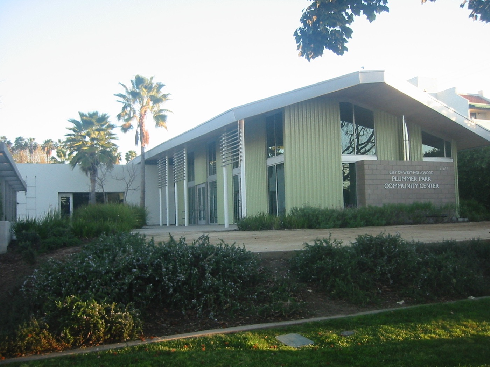

West
Hollywood

Is West Hollywood safe?
West Hollywood is one of the most walkable cities in the country, and that density is a big part of why it can still feel active at 1 a.m. on a Saturday. Its Walk Score is 91 out of 100, and the city is served by a dedicated Los Angeles County Sheriff’s Station. An early-2026 Sheriff’s report showed Part I crime down 21% through February year over year, aggravated assault down 44%, and robbery down 40%. The city had also added four station positions—including one deputy and an entertainment-policing sergeant. It isn’t a perfect record, and property crime in a dense, visitor-heavy stretch never fully disappears, but it’s a place I always felt like I could walk home in.
- City since
- 1984
- Area
- 1.9 sq mi
- Walk Score
- 91 / 100
- Law enforcement
- LASD WeHo Station
- Between
- Hollywood + Beverly Hills
Walkability and city size via the City of West Hollywood. Public-safety figures are snapshots, not guarantees; review the West Hollywood Sheriff’s Station for current information.
West Hollywood Real Estate Agent
West Hollywood holds a very specific place in my heart.
I lived there three different times, in three different apartments, back before Sherman Oaks and my husband and my kids, and it is genuinely where I figured out how to be a young, single adult in this city. There’s a version of me that still lives on those blocks a little, the one who could walk to dinner, walk to a show, walk home again without ever getting in a car, and never once thought that was a luxury until I left.
What I actually loved about it wasn’t any one restaurant or any one night out, it was the density of the whole thing. Everything was close enough that plans just happened. You’d go out for one drink and run into three people you knew. You’d walk somewhere for coffee and end up staying for two hours. It’s a small city, less than two square miles, and that smallness is the whole point, it makes it feel like a real neighborhood instead of just a stretch of LA you pass through.
I don’t live there anymore, but I still send people there constantly, for a night out, for a walk, for a version of LA that isn’t trying to be anything other than exactly what it is.
Let me give you a tourMile-and-a-half stretch · music history · still loud on a Friday
The street that explains West Hollywood.
If one street explains why West Hollywood is what it is, it’s Sunset. The Whisky a Go Go opened in 1964 and gave the world go-go dancing before The Doors became its house band. The Troubadour has been running since 1957, first as a 65-seat coffeehouse before it moved to its current Santa Monica Boulevard spot, and it’s where Glenn Frey met Don Henley and decided to start the Eagles. The Roxy opened in 1973 with David Geffen and Lou Adler behind it and has hosted everyone from David Bowie to Prince.
None of these are nostalgia acts playing to an empty room. They’re still the rooms working musicians want to play. Walk the Strip on a weekend night and it’s still doing exactly what it’s always done.
Explore the Sunset Strip’s historyWhere in LA is West Hollywood?
West Hollywood sits between Hollywood to the east and Beverly Hills to the west, with the Hollywood Hills rising just north of Sunset and the flats running south toward Beverly Boulevard and Melrose Avenue.
It’s fully surrounded by the City of Los Angeles and Beverly Hills without being part of either: its own independent city since 1984, just 1.9 square miles, which is small enough to walk end to end.
The useful distinction: West Hollywood is its own city. “Hollywood” is a neighborhood of Los Angeles immediately to the east, and the Hollywood Hills extend beyond West Hollywood’s northern boundary.
After dark
Four rooms that still make the night.
The Strip’s working music venues and the Rainbow District institution that have outlasted whole eras around them.
Swipe to browse the places

Whisky a Go Go
Open since 1964, the old Doors house-band stage is still a real working venue rather than a museum piece.

Troubadour
Running since 1957, intimate enough that even a show you came to casually can feel like the one everyone will mention later.

Gary Minnaert / public domain.
The Roxy
Lou Adler’s 1973 room, still pulling real acts beneath the same unmistakable red neon on Sunset.

The Abbey
A West Hollywood gay-bar institution, sprawling across indoor and outdoor rooms near Robertson and Santa Monica.
At the table
Five useful places to know.
These aren’t presented as my personal greatest-hits list. They’re current, well-established neighborhood anchors that cover the dinner moods West Hollywood actually gives you.
GRANVILLE
Modern-casual all-day food and a full bar on Beverly Boulevard.
La Bohème
A longtime Santa Monica Boulevard dining room with chandeliers, patio seating, and live entertainment.
Pura Vita
Plant-based Italian food and wine with a dedicated West Hollywood following.
Traktir
An Eastern European tavern serving borscht, pelmeni, and infused vodkas since 2002.
Ladyhawk
Eastern Mediterranean plates inside the Kimpton La Peer in the Design District.
Schools in and around West Hollywood
West Hollywood ElementaryPublic · K–5 · LAUSD · GreatSchools 8/10 at publication
Middle and high school optionsAssignments may extend beyond city limits
West Hollywood has a lighter school footprint than Sherman Oaks or Los Feliz, but it isn’t a school desert. School assignments and programs depend on the exact property address and may change. Verify any home through the LAUSD School Directory and confirm current ratings directly with GreatSchools.
Two parks that carry a lot of city life

West Hollywood Park
Off San Vicente, this is the polished civic center of the west side: lawn, dog parks, courts, the Aquatic and Recreation Center, West Hollywood Library, and public art beside the Pacific Design Center.

Gary Minnaert / public domain.
Plummer Park
The longtime Eastside community hub: mature trees, lawn, a large playground, courts, community rooms, and a weekly farmers market in the part of town that carries the city’s Russian-speaking history most visibly.
West Hollywood houses that make the case.
From The Zonshine Edit.

Obsession No. 017
7728 Woodrow Wilson Dr
A private Upper Nichols Canyon modern with timber, concrete, glass, a mirrored garden sauna, and a freestanding marble tub set like a sculpture.
Read the house story →West Hollywood on your mind? I’ve got you.
Whether you want the density I loved when I lived there or just a house that’s five minutes from all of it, tell me what you’re picturing and we’ll find the block that fits.
Let’s start hereHancock ParkHighland ParkLos FelizPasadenaSherman OaksSilver LakeStudio CityWoodland Hills